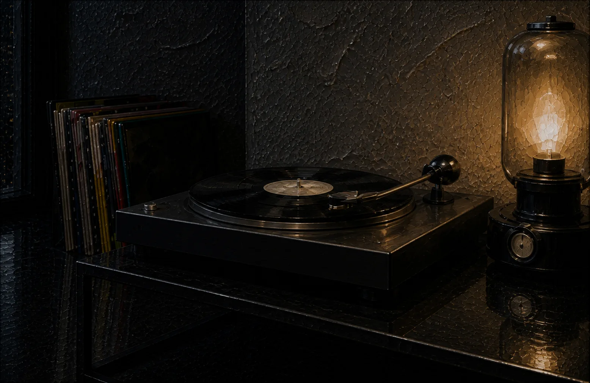
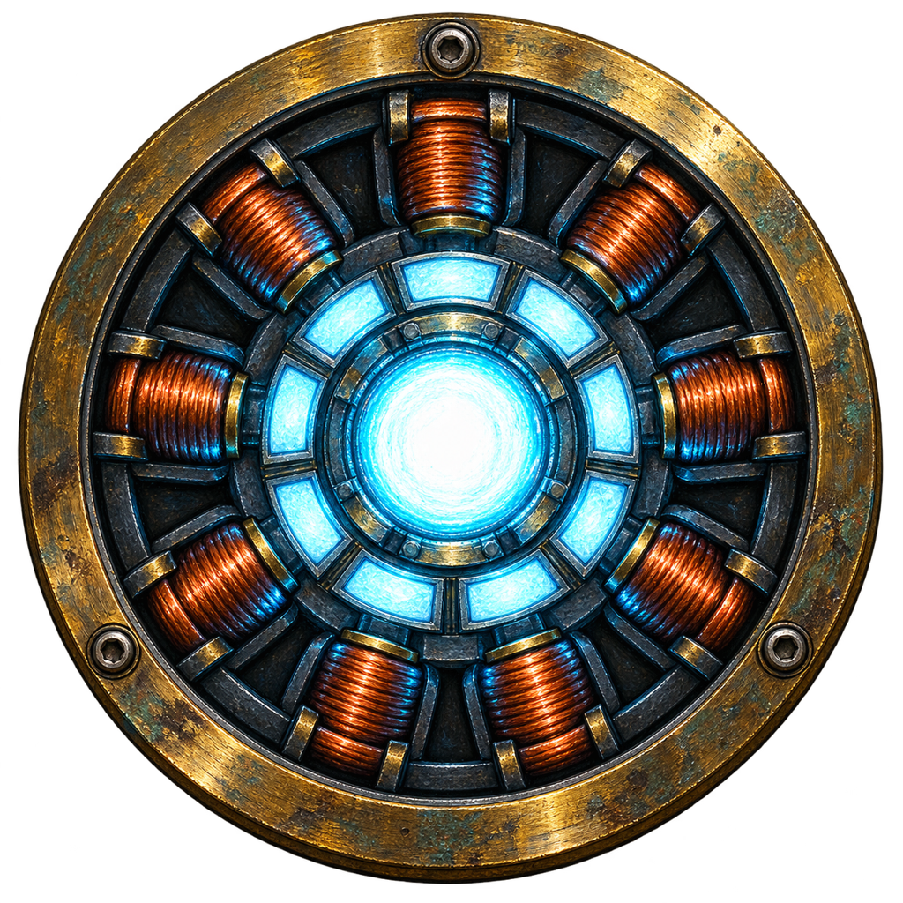

Xavi
Bosch
Interaction & digital product
Barcelona · open to 2026
Design, technology
and digital product
I'm currently studying Interactive Product Design and Creation at La Salle Barcelona, where I've been developing a perspective that combines design, technology, and digital product development.
What motivates me most is exploring the space where technical thinking meets human needs. I enjoy understanding how products work behind the scenes, but I'm just as interested in how people interact with them and what makes an experience feel intuitive.
Recently, much of that curiosity has been focused on artificial intelligence, and how it is changing the way digital products are imagined, designed, and built, and the opportunities it creates for the future.
This portfolio is a reflection of that journey: a collection of projects, experiments, and ideas that represent what I'm learning and the kind of products I hope to build.